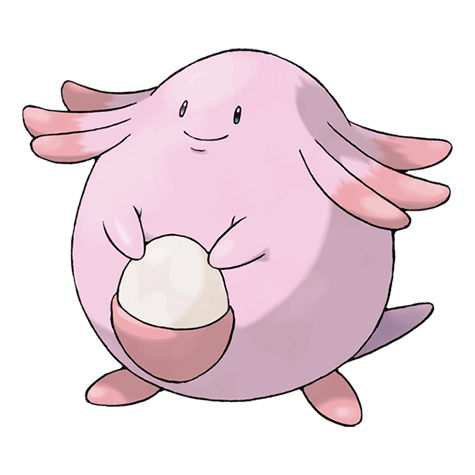

Назад
Ченси

Ченси — Покемон 1 поколения под номером 113 в Покедекс. Обитает он в регионе Канто и относится к Нормальному типу. Ченси каждый день откладывает яйца с отличным питательным содержанием. Яйца такие вкусные, что их с удовольствием съедают даже те люди, которые потеряли аппетит.
Тип:
Нормальный
Эволюция
# 113 Ченси